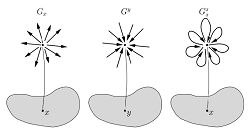
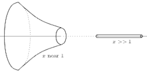
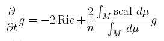
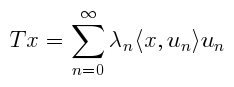
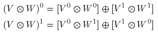

Research
I once was a geometric analyst whose research addresses various questions related to PDE on Riemannian manifolds, especially Ricci flow. Roughly stated, these questions involve the following fundamental issues:
- Stability: which stationary solutions of the flow are dynamically attractive?
- Solitons: in what sense do these ``special solutions'' model behavior of general solutions at singularities?
- Symmetry: how does the flow behave on spaces with extra symmetry or structure (such as nilpotent or solvable Lie groups), and in what situations does Ricci flow naturally couple with other geometric flows (such as harmonic map flow)?
My published research papers:
- Solvsolitons associated with Heisenberg algebras, Results. Math. (2014) 65: 155.
- Explicit Ricci solitons on nilpotent Lie groups, J Geom Anal (2013) 23: 47.
- Linear stability of algebraic Ricci solitons, with Michael Jablonski and Peter Petersen Journal für die reine und angewandte Mathematik (Crelles Journal), Volume 2016, Issue 713, Pages 181–224.
- Dynamical stability of algebraic Ricci solitons, with Haotian Wu, Journal für die reine und angewandte Mathematik (Crelles Journal), Volume 2016, Issue 713, Pages 225–243.
- Results on coupled Ricci and harmonic map flows, Advances in Geometry, Volume 15, Issue 1, Pages 7–26.
Other preprints:
- On the Linear Stability of Expanding Ricci Solitons, with Michael Jablonski and Peter Petersen.
- Stability of solutions of certain extended Ricci flow systems.
I graduated in May, 2011 from UT Austin, under the supervision of Dan Knopf.
My Ph.D. dissertation:
- Analysis of geometric flows, with applications to optimal homogeneous geometries
Other Stuff
Here are a few math-related things.
Here is an expository paper that I wrote for a recent class, concerning groupoids. |
 |
|  | Here is another expository paper that I wrote for a recent class, this time concerning collapse in Riemannian geometry. |
Here are notes from my oral candidacy exam. I presented the main ideas from this paper, which uses the Ricci flow to classify certain types of manifolds. |
 |
 |
I recently participated in transcribing a series of lectures on Topological Quantum Field Theory and the Cobordism Hypothesis, give by Jacob Lurie. Videos of the lectures, which were part of the Persepctive in Geometry lecture series, are also available. |
Quick! What's the spectrum of a self-adjoint compact linear operator on a Hilbert Space? If you have to think for more than 3 seconds before answering, then you should check out my worksheet (pdf) on such operators. |
 |
|  | Finally! Your chance to learn all about super linear algebra! I prepared a few background notes for a paper I was reading recently. Also included is info on vector bundles. These are in no way comprehensive. |
Richard P. Feynman is |
|
Also the man: Paul Erdos, the Kevin Bacon of Mathematics. Here is perhaps the first published reference to the Erdos number, appearing in the American Mathematical Monthly in 1969. Erdos himself replied to the short article by, unsuprisingly, doing real mathematics with the Erdos number. My own Erdos number is 4. |
last modified: 11/25/2019